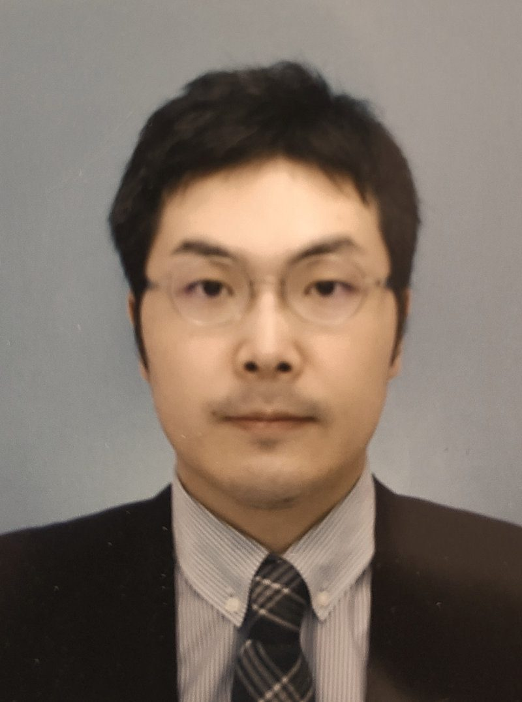

私たちについて
eureka///CONSULTING （エウレカコンサルティング）
- 設立
- 2021年4月
- 事業内容
- 事業変革コンサルティング事業（新規事業立ち上げ支援、既存事業成長支援）／見積支援ソフト「見積アシスタント」の開発・提供
- 代表
- 深山 航
- 連絡先
- info@eureka-consult.com
- 所在地
- 神奈川県横浜市神奈川区金港町5-14 クアドリフォリオ8階（横浜駅きた東口A出口から徒歩2分）
MISSION
スタートアップ・中小企業の支援を通じて
持続可能なより良き社会づくりに貢献する
VALUES私たちの提供価値とスタンス
1. 私たちは、専門性を尖らせた少数精鋭であり続けます。
私たちeureka///CONSULTINGは、組織拡大を追求しません。
高い専門性を有する、少数精鋭のプロフェッショナルだけでチームを構成します。
ですので、お受けできるプロジェクトの幅は大手ファームに比べると限定的かもしれません。
ですが、その分だけ我々の持つ強み・専門スキルを尖らせ続け、提供価値にこだわり続けます。
2. 私たちは、クライアントのメンバー育成に責任を持ちます。
私たちeureka///CONSULTINGは、一方的なあるべき論の押し付けを行いません。
クライアントのプロジェクトメンバーと一緒に問題・課題に取り組み、メンバー自らが成長し、納得感を持って戦略実行・施策実行を行えるプロジェクト設計を行います。
ですので、大手ファームのプロジェクトと違い、私たち主導で施策を実行するというよりも、
クライアント自ら手を動かしていただく必要があります。
ですが私たちと一緒に頭と手を動かした分だけプロジェクトメンバーの成長に繋がり、
クライアントの組織力が高まると確信しております。
3. 私たちは、適正なプロジェクト費用にこだわります。
私たちeureka///CONSULTINGは、過剰な粗利や中間マージンをいただきません。
総合系ファームの戦略立案プロジェクト費用の約 4分の 1 が目安金額となります。
4分の1と聞くと、『安すぎて不安』『怪しい』と思われるかもしれません。
ですが、私たちは適正金額であると考えております。
近年、総合系と呼ばれる大手ファーム各社は組織拡大を急激に進めており、
その反動として売り上げを生み出さない大量の待機人員と莫大な管理コストを抱えています。
その結果、提供価値が変わらないのに工数単価だけが急騰し続けていたり、
高級人材派遣と揶揄されるようなクライアント業務を丸ごと請負うケースなどが散見されます。
特に後者については、クライアントの持続的成長を妨げかねない危険性を孕んでいます。
私たちeureka///CONSULTINGは、これらの実態はプロフェッショナルファームとしての
あるべき姿とはかけ離れたものである、と考えております。
私たちは専門性の高い自社メンバーのみで、
クライアントと適切に役割分担しながら、
組織として持続可能かつ適正な利益率に抑えたプロジェクト費用のみをご請求いたします。
メンバー

深山 航
WATARU FUKAYAMA
東北大学 工学部 出身。
総合系コンサルティングファームにて、戦略コンサルティングに従事。
日本を代表する大企業やスタートアップ企業・中小企業に対して、
顧客体験変革・業務ビジネスモデル変革・デジタル変革を統合した
事業変革コンサルティングを行う。
またスタートアップ企業・メガベンチャー企業を4社経験。
東証プライム上場のメガベンチャーや大手企業の100％子会社スタートアップなどに所属し、新規事業開発室長やプロダクトマネージャーを経験。
自社・クライアント含めて新会社設立や上場などにも複数回立ち会い、
0→1から1→10フェーズまで広く深い経験を持つ。
▼専門領域
・デジタル領域での新規事業・サービス立ち上げ、グロース戦略
・事業戦略策定、CX・BX・DX戦略策定/実行、ビジネスモデル策定
・業務改革、業務プロセス設計(マーケ/営業/CS/PMM/PdM)
・AI(特に画像認識や生成AI)
・SEO(大規模ECサイト、オウンドメディア運営)
eureka///CONSULTING創業の想い
はじめまして。eureka///CONSULTING代表の深山です。
私は複数のメガベンチャー・スタートアップ企業に所属し、
新規事業の立ち上げや既存事業グロースに十数年携わってきました。
その間に多くの困難や挫折・苦しみを経験しましたが、
仲間や自分の頑張りを無駄にしたくないとの思いから
藁にもすがる思いで様々な施策・打ち手を試行錯誤してきました。
その結果、担当事業の大きな成長実現や、3つの新規事業・新サービスを立ち上げることができました。
その後に総合系コンサルティングファームに転職し、
日本を代表する大企業やスタートアップなど
様々な企業様に対して戦略立案・事業変革コンサルティングを行ってまいりました。
そしてコンサルティングファームでの経験やプロジェクトを通じて痛感した事は、
『このコンサルティングを自分がスタートアップにいた頃にもっと早く受けたかった』でした。
※※※
私自身がスタートアップに所属していた頃は、
打ち手の数々を繰り出すものの思ったように成果が上がらない日々を過ごしていました。
ひたすら考え、試行錯誤し、朝令暮改を繰り返し、それでも結果がなかなか出ない。
すると次第にメンバーも疲弊していき、組織のモチベーションも下がっていく。
こうなると何をしたらよいのか、何が問題なのかも判らなくなり、非常に辛い状況を何度も味わいました。
そして自分だけがこんな状況にあるのか、と孤独感を感じたりもしました。
しかし、そうではありませんでした。
コンサルティングファームでの経験を通じて、多くの企業が私と似た状況で苦しんでいることに気づいたのです。
多くの企業が、様々な打ち手・施策に日々取り組んでいる。
そして一つ一つの施策の方向性や内容はそれほど間違っていないものの、
事業全体の顧客体験や業務を貫く戦略・ストーリーが少し抜け落ちている。
結果として、顧客にサービスの魅力・実力が十分に伝えきれず、事業成長に上手く繋がっていない。
こうしたケースが本当に多いのです。
そこで一度丁寧に事業戦略・組織戦略に立ち戻り、
一貫した顧客体験や業務・システム設計を明確に打ち出すことで、
数々の施策の点と点が繋がり、しっかりと成果実感に繋がっていくという流れを何度も体験しました。
この『事業全体を貫く戦略・ストーリーづくりの威力』を痛感したのです。
※※※
あるプロジェクトの終了後に、クライアントの責任者の方から言われたことがあります。
「自分たちのやっていたことは間違ってなかったけど、深山さんに言われるまで大事なことが欠けていたことに気づいていませんでした。でも、そこに気づけて本当に良かったです。日々の頑張りがちょっと報われた気がします」と。
誰かが報われる瞬間に立ち会える喜びは、いつになっても忘れがたいものです。
そしてこれこそが、私がeureka///CONSULTINGを創業しようと思ったきっかけです。
自分自身がスタートアップに所属していたころに、もっと早くこうした報われる体験をしてみたかった。
そしてスタートアップに携わるすべての人々に、こうした頑張りが報われる瞬間を共有したい。
これを読んでくださった皆様と一緒に、事業成長に伴走し、報われる瞬間に立ち会うのが私の夢です。
引き続きどうぞよろしくお願いいたします。
eureka///CONSULTING 代表
深山 航